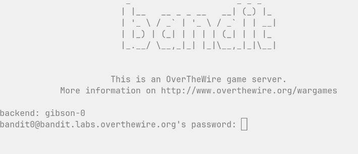

level 0 : before you can play you need to call up the switchboard and have them connect you to ext 2220 then navigate securty -sshd -provide credentials to security and be authenticated for that line connection ssh bandit0@bandit.labs.overthewire.org -p 2220 dns lookup is phonebook lookup in reverse for the target domain of overthewire.org request to access ext 2220 using -p modifier to avoid public exts security guard sshd picks up and ask for pw / accepts the pw and connects you now have acces to that ports files you can look around 'ls' and see whats what / cat readme reveals a alphamumeric pw that could be useful exit next we call the same ext and ask for higher level clearance ssh bandit1@bandit.labs.overthewire.org -p 2220 sshd validates auth from the pw found in readme looking around 'ls' found a a file called '-'' i cant open a file with that name so i give it the dir + name to force it to recognise - as a filename cat ./- - opens and found the next auth token notes for future ; there is an overlap here with the film 'the matrix' and how the architect balsed up becuase he didn't realise that humans need choice and struggle to prevent synaptic pruning during sleep. without novelty , choice and struggle humans deterioate and decline cognitevly there is also an overlap here with modern life and ai ; meaning we are constantly trying to optimise for reduced cognitve loads and predicabilty when its exactly what we need for health and longevity there is also a post to write about the stupidity of conspiracies given a cursory glance under the hood of all modern systems reveals networks of sincere people doing amazing work for now financial benefit.
Zorin OS: Brave Browser Installation Guide
This guide details how to install the Brave browser on Zorin OS via the command line. I am pretty impressed by how much RAM this has released and how much smoother it all feels. I reformatted the pen drive afterwards which took longer than expected becuase I wanted the flex of exFAT32 for mobility and the option in the Linux disk manager didn't have it as an option due to missing files. Once I realised it was missing some exfat packages it was a simple fix (sudo apt update && sudo apt install exfatprogs).
Key Technical Terms
Step-by-Step Instructions
1. Install Curl
• Command: sudo apt install curl
• Reasoning: Installs the tool required to download files directly from the web via the terminal.
2. Download Security Key
• Command: sudo curl -fsSLo /usr/share/keyrings/brave-browser-archive-keyring.gpg [Brave Key URL]
• Reasoning: Downloads a digital "key" that confirms the browser files are authentic and haven't been tampered with.
3. Register Repository
• Command: sudo curl -fsSLo /etc/apt/sources.list.d/brave-browser-release.sources [Brave Sources URL]
• Reasoning: Tells your system where to look for Brave updates, allowing the OS to fetch the latest version automatically alongside system updates.
4. Update and Install
• Command: sudo apt update && sudo apt install brave-browser
• Reasoning: Refreshes your system's software list and executes the actual download and installation of the Brave application.
Part 1: The Installation Experience
1. Hardware Preparation: Back up all essential data from Windows.
2. Boot Media: Used BalenaEtcher to flash the Zorin OS ISO onto a USB drive. Note: If BalenaEtcher fails, run as Administrator or use Rufus for a more reliable connection to the hardware flasher.
3. Installation: Booted from the USB and followed the graphical installer. This replaced the Windows partition, removing the heavy OS overhead and freeing the hardware for native Linux efficiency.
Part 2: Performance Analysis
Part 3: Installing Brave Browser
1. Install Curl: sudo apt install curl (Installs the tool to download files via terminal).
2. Download Security Key: sudo curl -fsSLo /usr/share/keyrings/brave-browser-archive-keyring.gpg [URL] (Authenticates the software).
3. Register Repository: sudo curl -fsSLo /etc/apt/sources.list.d/brave-browser-release.sources [URL] (Enables automatic updates).
4. Update and Install: sudo apt update && sudo apt install brave-browser (Refreshes the software list and installs Brave).
Part 4: Comparative Performance Data (Windows 11 vs. Zorin OS)
| Metric | Windows 11 vs Zorin 18.x | Improvement/Impact |
|---|---|---|
| Idle RAM Usage | ~4.5GB - 5.0GB (55-60%) vs ~2.0GB - 2.4GB (25-30%) | ~2GB+ freed for apps. |
| Paging/Swap | Frequent (SSD as backup RAM) vs Minimal/Preventative | Reduced SSD wear & stuttering. |
| Data Throughput | Limited by OS overhead vs Native Hardware Speeds | ~7x faster communication. |
| UI Responsiveness | Subject to micro-stutters vs Instant execution | Elimination of paging-induced lag. |

Parenting, business, blogging, coding, meditating, being social, job. It does not matter what you do or how you do it....somebody will always tell you ...you're doing it wrong. As long as you know why you do it and aren't hurting anybody else....it's all gucci to me.
I write to solve problems, think with my fingers, to read back continuously and update my priors and maybe leave a chaotic wiki of my brain and Life for my kids. It's not for anybody else. Have a strong core of self is always advice I give myself. I like the Howard Roark quote when asked about how others might see him. "I don't think about it" - was the retort. Why would I edit anything. I've little interest in aesthetics. I love solutions and functionality. I love Tom Sachs and his views on leaving the glue on repairs and using what is around you. He calls it "Bricolage: Making Do". I love this idea. To me it's beautiful. A collection of letters that are misspelt but we all know what it means. I don't need to appear intelligent - I already know what my level is. More and more I find imperfection just.....perfect. I can see typos in every sentence and I don't want to go back and fix it.
Early Morning Light and the Circadian Pathway
1. The Retinohypothalamic-SCN Pathway
• Photons to Signals: Early morning natural sunlight contains a high density of blue-spectrum light. When these photons enter the eye, they strike specialized photoreceptors called intrinsically photosensitive retinal ganglion cells (ipRGCs).
• The Master Clock: These cells contain the photopigment melanopsin and project directly to the suprachiasmatic nucleus (SCN), the master circadian pacemaker located in the hypothalamus.
2. Biological Effects
• Cortisol & Melatonin: The activation of the SCN triggers a systemic cortisol release (promoting alertness and raising body temperature) while actively suppressing the production of melatonin from the pineal gland.
• The 14-Hour Sleep Timer: This morning light exposure anchors your circadian rhythm, setting an internal timer that dictates when melatonin will begin secreting again roughly 14 to 16 hours later, optimizing sleep architecture.
3. Practical Implementation
• Direct Exposure: View natural outdoor light for 5–10 minutes on clear days (or 15–30 minutes on overcast days) within the first hour of waking.
• Avoid Barriers: Window glass filters out critical blue light wavelengths and reduces lux intensity by up to 90%, making outdoor exposure significantly more effective than looking through a window.
Voltage Mechanics: The master clock in your brain (the Suprachiasmatic Nucleus, or SCN) runs a literal 24-hour electrical cycle. During the day, your clock neurons depolarize (increase voltage/charge) and fire action potentials continuously; at night, they hyperpolarize (drop voltage) and go silent. The electrical state of the cell membrane directly tells the DNA what time it is. This is way more complicated than I imagined and has scope for a lot more rabbit holing!
Quantum Physics: The light-sensing proteins in your eyes and cells (specifically cryptochromes) rely on quantum coherence and spin chemistry to detect blue light and even the Earth's magnetic field. This quantum state translates a single incoming photon into the biochemical signals that reset your clock genes. How does the human organism sense light? It does this using specialized photoreceptors in the retina, including proteins called cryptochromes. Cryptochromes do not operate on simple classical chemistry; they are the poster child for the emerging field of quantum biology.
Together, they form a perfect closed-loop system: the quantum mechanics of atomic spin tell the body when the day begins, and the cell membrane voltage coordinates the physical work of actually living it.
Actions: field of quantum biology / cryptochromes / quantum coherence / lux intensity
This was a bit of a pain to get around Apple's OS security protocol of preventing code being executed locally. Tried a few things and then used GitHub to host and open in Safari. Neat solution. Idea was to prove concept that I can host my own applications locally offline. Started the office tracker - see image.
Zero Network Dependency: The application operates entirely client-side. The HTML structure, CSS layout rules, and JavaScript logic engine are stored in the device's secure sandboxed memory after the initial Safari load.
Persistent Web App (PWA) Properties: Utilizing Apple WebKit meta tags, the app launches inside an isolated fullscreen wrapper directly from the iOS Home Screen, bypassing browser search bars.
Data Schema & Storage Architecture
The system parses and serializes state changes into JSON strings, writing them to two distinct partitions in the browser's synchronous key-value storage (localStorage):
1. Active Board (offline_habits): Manages current-week data in a 7-element boolean array.
2. Historical Vault (offline_habits_archive): Holds a deep-copy list of objects containing the habit name, date range, historical checkmarks, and a calculated completion score.
Operational Workflow
• State Updates: When a checkbox is toggled, JavaScript mutates the active array in memory, re-renders the UI grid, and commits the updated state to storage.
• Archiving Logic: Clicking "Reset Week" triggers a deep copy of the active array. It appends the snapshot alongside a formatted date stamp and performance score (e.g., 5/7) to the archive vault before re-initializing the active week arrays to false.
Core Code Logic & Snippets
The Local Database (localStorage)
The state is kept in sync by reading and writing to the browser's key-value store using JSON serialization.
// Load data on startup
let habits = JSON.parse(localStorage.getItem('offline_habits')) || [];
let archive = JSON.parse(localStorage.getItem('offline_habits_archive')) || [];
// Save state to storage
function saveState() {
localStorage.setItem('offline_habits', JSON.stringify(habits));
localStorage.setItem('offline_habits_archive', JSON.stringify(archive));
}
Toggling Days
A single change in state updates both the local array and triggers a complete screen re-render.
function toggleDay(habitIndex, dayIndex) {
// Invert boolean state
habits[habitIndex].history[dayIndex] = !habits[habitIndex].history[dayIndex];
saveState();
render();
}
The Option B Archiving Engine
On resetting, active states are deep-copied into the archive array with metadata before the active checklist is cleared.
function archiveAndResetWeek() {
const todayStr = new Date().toLocaleDateString('en-GB');
habits.forEach(habit => {
const totalChecked = habit.history.filter(Boolean).length;
// Push snapshot to archive
archive.push({
name: habit.name,
dateRange: todayStr,
history: [...habit.history], // Deep copy array
score: `${totalChecked}/7`
});
// Reset active tracking array
habit.history = [false, false, false, false, false, false, false];
});
saveState();
render();
}
There is something perversly satisfying about having nerd statsonscreen with a ultra low res of 144. YouTube Stats for Nerds Summary Based on image.png: Dropped Frames: 1 dropped out of 1772 (very smooth playback). Resolution: Running at a low 256x144 resolution. Connection Speed: Stable at 4711 Kbps. Buffer Health: Excellent at 82.87 seconds pre-loaded. Codecs: AVC1 (video) and Opus (audio). To turn off: Go to the gear icon (Settings) on the video player and toggle "Stats for Nerds" off.

Lawnmower Blade Maintenance Summary
1. Cleaning & Assessment
• Initial State: The blade had a thick layer of grass crust obscuring the edge.
• Action: Cleaned the blade surface thoroughly.
• Inspection: Revealed the factory bevel and identified small nicks/rough patches at the cutting tip from normal use.

2. Sharpening Process
• Tool Used: Axe stone lubricated with GT85 (with PTFE).
• Method: Kept the blade stationary and applied the stone at a 30-degree angle, matching the factory slant.
• Technique: Worked in overlapping circular motions from the inside toward the tip on both ends until a bright, shiny strip of steel was exposed.
• De-burring: Flushed the flat underside with the stone to snap off the metal lip.
• Protection: Finished with a protective spray of GT85 to prevent rust and grass adhesion.
3. Reinstallation & Safety
• Tightness: Clamped the blade firmly to the motor shaft until it was locked completely solid.
• Motor Resistance: Confirmed it is normal for the blade to be stiff and difficult to turn by hand when powered off due to the motor's internal resistance.
• Pre-flight Checks: Verified there is no wobble, the blade does not scrape the plastic deck, and all tools/wooden blocks have been removed.
Shipping Container Identification & Weights
Container Identification:
• Owner: Mediterranean Shipping Company (MSC).
• Tracking Code: MSNU 793757 5 (Unique international BIC code used for global tracking).
• Size Type: 45G1 (40 feet long, High-Cube at 9'6" tall, featuring passive ventilation).

Weight Specifications:
• MAX. GROSS: 32,500 KGS / 71,650 LBS (Absolute maximum legal weight of the container plus cargo).
• TARE: 3,940 KGS / 8,690 LBS (Weight of the empty container itself).
• PAYLOAD: 28,560 KGS / 62,960 LBS (Maximum weight of the actual cargo allowed inside).
• CU. CAP.: 76.4 CUM / 2,700 CU.FT. (Total internal volume capacity).
Content & Destination Tracking:
• Anonymity: Containers do not display contents or destinations externally to protect against theft and piracy.
• Tracking: Customs and logistics providers look up cargo manifests and Bills of Lading via the unique Container Number (MSNU 793757).
• Exceptions: External markers are only used for specialized setups, such as hazardous materials (Hazmat placards) or refrigerated cargo (white Reefer containers).

I despise Kitty Fane. Does that make it good writing? Maybe? I'm not really enjoying it but want to know how it ends. 14072026 - Kitty has been woken in the dead of the night and taken to see a dying Walter. He didn't want her to see him dying is Waddington's explanation. For this I despair of Walter - he's such a pussy and it irritates me that after everything he stills clings to this silly upper class stiff upper lips and wanting to be the perfect 'English gentleman'. So why am I still reading? I had such a guttoral response to Kitty's behaviour at the start I want to see if she get s a good dose of Karma.
....update 160720262243.
The Irony of his Last Words: Walters famous last words (quoting Oliver Goldsmith's Elegy on the Death of a Mad Dog) are the ultimate self-indictment: "The dog it was that died." In the poem, a mad dog bites a man, and everyone expects the man to die—but instead, the dog dies. Walter realized too late that his own toxic, biting malice and obsession with revenge are what actually killed him, while Kitty (the supposedly weak one) survived.
Kitty represents the superficial, "finished" young woman of her social class. She was educated to play the piano, dress well, and engage in mindless small talk to secure a husband. They are both terribly sad shallow examples of second handers - they are both living for others instead of being rational and self interested actors with a 'juice' for life. I wish I'd never started this book. It's depressing.

Decoding Global Coordinates (DMS Format)
Geographic coordinates written in DMS (Degrees, Minutes, Seconds) format function as a high-precision global address by breaking down grid lines into units of time.
Latitude: 40° 42' 46" N
Indicates the precise position North or South of the Equator (horizontal grid lines).
• 40° (Degrees): Represents 40 major grid lines north of the Equator. One degree spans approximately 69 miles.
• 42' (Minutes): Each degree is divided into 60 smaller segments called minutes. This indicates 42 segments past the 40th parallel.
• 46" (Seconds): Each minute is further divided into 60 smaller units called seconds. This represents 46 steps past minute 42, narrowing accuracy down to a few meters (roughly a car length).
• N (North): Confirms placement in the Northern Hemisphere.
Longitude: 74° 00' 21" W
Indicates the precise position East or West of the Prime Meridian in Greenwich, England (vertical grid lines).
• 74° (Degrees): Represents 74 major vertical lines west of the Prime Meridian.
• 00' (Minutes): Indicates a position resting directly on the main 74-degree line with no additional minute increments.
• 21" (Seconds): Represents 21 precise tracking units past the 74-degree line.
• W (West): Confirms placement in the Western Hemisphere.
Geographic Example: The specific coordinate combination of 40° 42' 46" N, 74° 00' 21" W pinpoints the main entrance of the New York Public Library in Manhattan, New York City.
Transition from DMS to Decimal Degrees (DD)
In modern computing, Decimal Degrees (DD) have largely replaced the traditional Degrees, Minutes, Seconds (DMS) format. While aviation and maritime navigation still utilize DMS, GPS systems, databases, and weather APIs rely almost exclusively on DD due to its computing efficiency.
Comparison Example (Warrington, UK)
• Decimal Degrees (DD): 53.3591831, -2.5054001
• Degrees, Minutes, Seconds (DMS): 53° 21' 33.1" N, 2° 30' 19.4" W
Key Reasons for Software Adoption
1. Simplified Parsing for Code
Processing traditional symbols (°, ', ") requires string manipulation, which slows down execution. Decimal degrees represent locations as standard floating-point numbers that software can process instantly.
2. Directional Mapping via Signs
Instead of using cardinal direction letters (N, S, E, W), Decimal Degrees utilize positive and negative signs to define hemispheres:
• North & East: Represented by positive numbers (+).
• South & West: Represented by negative numbers (-).
3. Scalable Digital Precision
Traditional DMS requires adding decimals to seconds to achieve sub-meter precision. Decimal Degrees handle precision strictly through the number of trailing decimal places:
• 4 decimal places: Accurate to roughly 11 meters.
• 7 decimal places: Accurate to approximately 1 centimeter, allowing commercial GPS hardware to map highly granular positions.
Building a DIY Weather Station
A homebrew weather station combines hardware sensors, a micro-computer, protective physical housing, and local programming.
1. Hardware Sensor Components
• Micro-computer: A Raspberry Pi or Arduino serves as the processing core.
• Environmental Sensors: Common chips like the BME280 measure temperature, humidity, and atmospheric pressure.
• Mechanical Sensors: Anemometers calculate wind speed, and tipping-bucket assemblies measure rainfall volume.
2. Physical Housing (Stevenson Screen)
Sensors require protection from direct sunlight and rain while remaining exposed to ambient air.
• Design: Built by stacking white plastic bowls or saucers upside down with uniform spacers.
• Function: The gaps allow continuous airflow for accurate ambient measurements, while the white material reflects radiant solar heat.
3. Data Collection Software
A local script handles data ingestion from the hardware pins.
• Operation: Reads sensor voltages, converts values to standard units, and logs data to a local file (e.g., backyard_weather.log).
• Integration: The logged files can be queried by local command-line applications to display hyper-local backyard metrics alongside public API data.
Weather forecasting is a complex scientific process that relies on data collection, physics-based computer models, and human meteorologists. The entire operation can be broken down into three main phases: observation, simulation, and communication.
## 1. Global Observation (Collecting the Data)
Before computers can predict the future weather, they must know exactly what the atmosphere is doing right now. Data is continuously gathered from around the planet using several methods:
• Surface Weather Stations: Thousands of automated stations on land and buoys at sea measure temperature, pressure, humidity, wind speed, and precipitation.
• Weather Balloons (Radiosondes): Launched twice a day from nearly 900 locations globally, these balloons climb up to 100,000 feet into the atmosphere, measuring vertical profiles of pressure, temperature, and moisture.
• Weather Satellites: Geostationary and polar-orbiting satellites track cloud coverage, ocean temperatures, and water vapor from space.
• Doppler Radar: Ground-based radar networks track the movement, intensity, and type of precipitation (rain, snow, or hail) in real time.
## 2. Numerical Weather Prediction (The Simulation)
Once the raw data is collected, it goes through a process called Data Assimilation. Because observations cannot cover every single square inch of the planet, supercomputers use mathematical models to fill in the gaps and create a perfectly uniform snapshot of the global atmosphere. This snapshot is plugged into Numerical Weather Prediction (NWP) models. These are massive computer programs containing complex fluid dynamics and thermodynamic equations.
• The Grid System: The supercomputer divides the atmosphere into a massive 3D grid of boxes, wrapping around the globe and stacking many layers high into space.
• Solving Equations: The computer calculates how air, heat, and moisture will move from one grid box to its neighboring boxes over time, using fundamental laws of physics.
• Ensemble Forecasting: Because small errors in initial data can cause completely different outcomes days later (the Butterfly Effect), supercomputers run the same model dozens of times with slightly altered starting data. If 45 out of 50 runs show rain on Thursday, meteorologists can confidently forecast a 90% chance of rain.
## 3. Human Interpretation and Communication
Computers generate the raw numbers, but raw model data can conflict or contain systemic biases. Professional meteorologists review multiple global models (such as the American GFS or the European ECMWF). They use their localized knowledge of geography—such as how a specific mountain range or coastline alters wind patterns—to tweak the results, finalize the forecast, and distribute clear warnings to the public.
Make sure when filming on an iphone it is set to "most compatible" so that it records in H.264 rather than HEVC . Otherwise it will need converting to MP4 or MPEG4 to play on a Sony TV . Understand that the file format system for the usb pen drive will most likely be FAT32 or EXFAT32 and will need to be EXFAT32 for anything over 4BG file size which most modern 4k films will be. There is an extensive archive and content that has no copyright on at Archive.org and i DLd Dracula for this lab. The original screen format is box due to the 1931 production and needed remote > tools (row 8) > screen size to configure.

Here is a detailed summary of our entire conversation, tracking how you went from a project idea to playing a classic film on your TV today.
## 1. The Original Idea: The Mini Media Server
You started with an idea to build a super small, slim, low-power media server on your shelf running free software to play your own locally held films and programs.
• The Blueprint: We discussed using a budget Intel N100 Mini PC (which costs around £130–£150, uses only 6 watts of power, and smoothly processes 4K video streams) paired with an external hard drive for storage.
• The Software: The recommended setup was a free Linux base (Ubuntu Server) running Jellyfin (a 100% free, open-source media manager that looks like Netflix).
## 2. The Phone Streaming Attempt & Troubleshooting
When you mentioned wanting to play your own short movies, we pivoted to seeing if you could stream them directly from your iPhone to your home TV for free without building a server yet. We hit a few roadblocks, which we solved step-by-step:
• Roadblock 1 (Mobile Data): Your first attempt failed because your iPhone was connected to giffgaff 4G instead of your home Wi-Fi. We fixed this by turning on your phone's Wi-Fi.
• Roadblock 2 (Device Incompatibility): Even on Wi-Fi, your phone couldn't find the TV. Your photos revealed you were trying to beam the signal to a NOW TV box (which uses Roku software) connected to a Sony TV (Model KDL-43WF663).
• The Culprit: Neither the NOW TV box nor that specific Sony model supports Apple AirPlay natively. Third-party casting apps on the App Store tried to charge you money or trick you into a subscription, which you rightly rejected.
## 3. The Practical Solution: The USB Stick Route
To bypass Apple and Sony's compatibility locks completely for free, we turned to the physical USB ports on your TV.
• Checking the USB Stick: You checked your HP v135w (E:) drive properties on your Windows PC. It was formatted to FAT32—which is perfectly readable by your Sony TV.
• Managing the Storage: The stick was an 8GB drive with only 1.43 GB of free space left. We discussed the 4GB file limit rule of FAT32 (meaning no single movie file can be larger than 4GB) and noted that 1.43 GB was tight but enough for a test.
## 4. Success with Dracula (1931)
You went onto Archive.org (a massive, legal public domain digital library) and found the classic movie Dracula (1931) starring Bela Lugosi.
• The file was 609.7 MB, making it small enough to fit perfectly into your remaining 1.43 GB of space without hitting the 4GB FAT32 limit.
• You downloaded it as an MP4 / H.264 file, transferred it over, and verified play configuration settings.